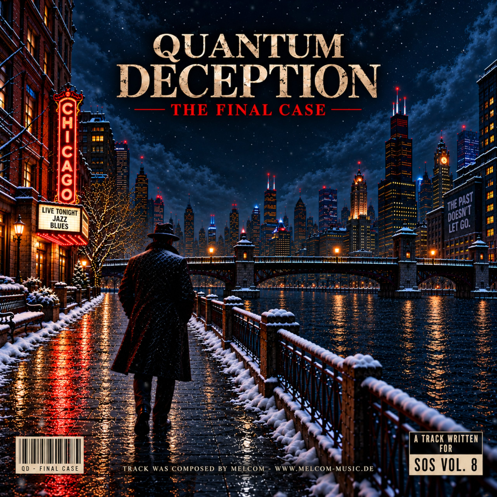
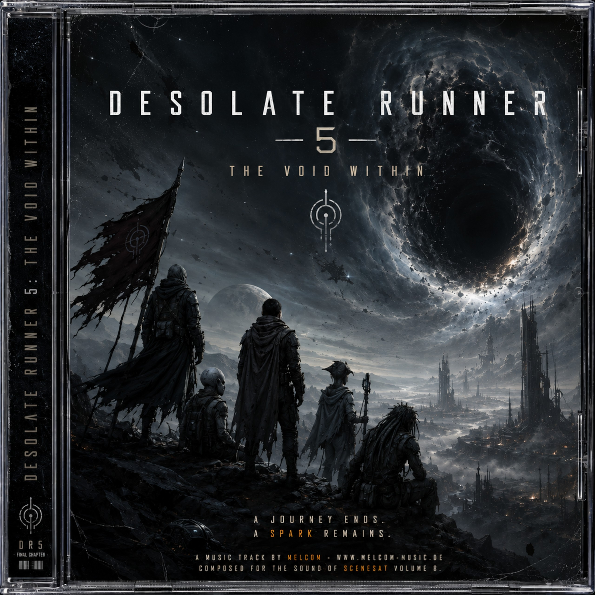
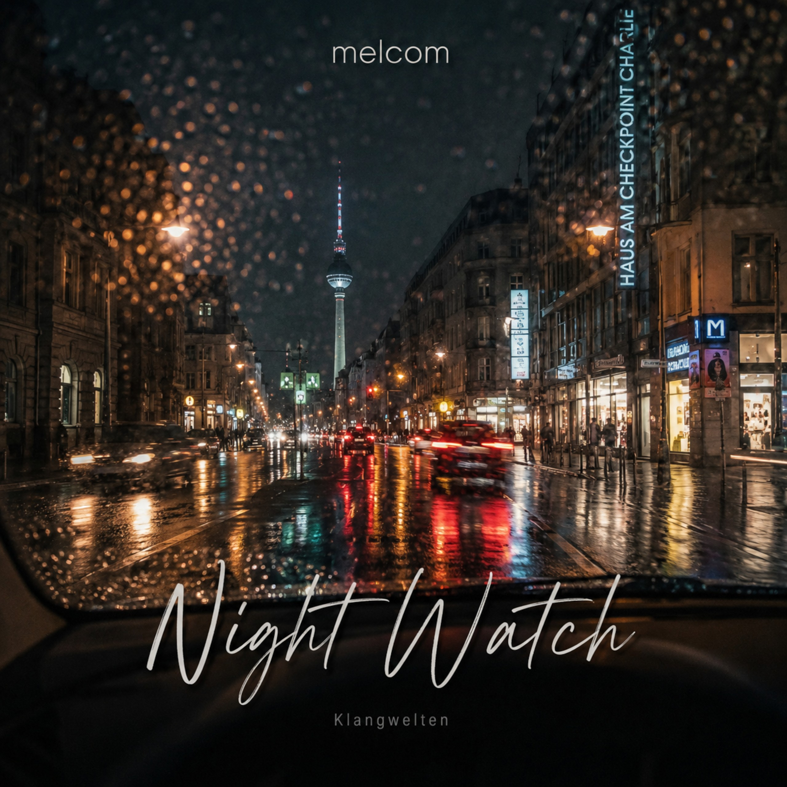

Modules & MP3s: 2026
Planned Tracks for 2026
Tracks currently planned for release during 2026. Download and streaming links will be added when each track becomes publicly available.
Release dates and details may change. Updates will be posted on the news page and my social media channels.
# Quantum Deception


Downloads & Streaming
Release pending: Download and streaming links will be added when the track is released later in 2026.
Track Information
This track features intentional audio glitches and sharp sound artifacts. I drew inspiration for these experimental elements from Virgill and Console (Martin Gretschmann). Thank you both - I hope I managed to capture at least a small part of your spirit and influence.
About the story behind the track:
The story takes place in a snow-covered Chicago far in the future. A private investigator - visually inspired by detectives from classic 1950s noir films - is searching for his missing wife. It is his final case. Guided only by fragmented clues and fading hope, he moves through a city consumed by cold, corruption, and shadows. He desperately searches for answers while the world around him slowly falls apart.
A special thank-you goes to @Virgill for the feedback, the inspiration, and of course, for putting up with me.
Behind the Sound
"Quantum Deception" has been an incredibly long and demanding journey. More than two years of work went into this track. During that time, I found new ways to make my sound even better. Every sample and every instrument was rebuilt, reshaped, and remastered again and again. Large parts of the track were originally created in OpenMPT and Renoise, then later exported as WAV stems - sometimes entire passages, sometimes just individual sounds or instruments. From there, the production continued to evolve in FL Studio.
Countless VST plugins were used throughout the process. By now, the project has moved so far beyond traditional tracking in programs like OpenMPT that no proper module file really exists anymore. And if one does, it is little more than an early sketch of what the track eventually became.
# Desolate Runner 5: The Void Within


Downloads & Streaming
Release pending: Download and streaming links will be added when the track is released later in 2026.
Track Information
The work on "Desolate Runner 5: The Void Within" has been a very long journey. I spent nearly two years working on and refining this track, trying to keep the spirit and atmosphere of the previous entries alive while also pushing my sound further than ever before.
Part 5 directly continues the events of "Desolate Runner 4: The Space We Are". And even though Part 4 is already six years old now (time really flies...), both tracks still share a lot of the same DNA.
Desolate Runner is a sci-fi saga I began in 2017, told entirely through music. Over the years, multiple tracks have followed the dark and desperate journey of the "Runners." This fifth and final chapter continues where "The Space We Are" ended - and finally brings the story to its conclusion.
The Desolate Runners - a small group of humanoids and aliens - struggle to survive in a distant future ruled by oppressive regimes. Forced into hiding, constantly hunted, and hopelessly outnumbered, their existence has become a never-ending fight for survival.
Now, with their numbers fading and hope growing weaker, only a handful still believe in a better future - a place somewhere among the stars where life is no longer defined by fear, violence, and escape.
But the universe is cold and unforgiving.
Will they finally find freedom?
Or will the void consume what remains of them?
A happy ending feels far away.
But sometimes, the smallest spark can change everything.
Goodbye o/
Behind the Sound
A large part of the track was created in OpenMPT, alongside Renoise and FL Studio, with many custom-made samples and instruments processed through various VST plugins.
Special thanks go to @Saga Musix for teaching me how to create my own custom samples in OpenMPT and push them even further with the help of VST plugins.
# Night Watch


Downloads & Streaming
Release pending: Download and streaming links will be added when the track is released later in 2026.
Track Information
For the past two years, I've been working on a new album called "Klangwelten".
"Night Watch" takes place on a rainy evening in Berlin, following a drive through the city on the way to work. I hope the atmosphere comes across as vividly as it felt while creating it.
The track is scheduled to appear as track 43 on "The Sound of SceneSat Volume 8".
Enjoy the track, and I hope you like it.
Behind the Sound
While most of my music still begins its journey in OpenMPT, I've been experimenting a lot with other tools such as Renoise and FL Studio. In fact, many of my more recent tracks received their final polish in FL Studio before reaching their finished form.
Describing the entire production process would probably take far too long, but "Night Watch" is a special case. This track was created entirely in OpenMPT. Every single sample and instrument was carefully reworked using various VST plugins, often resulting in completely new sounds and samples. As always - or at least I hope so - I put a great deal of effort into every detail. This wasn't a project that came together in a few days. It took months of work, experimentation, and refinement.